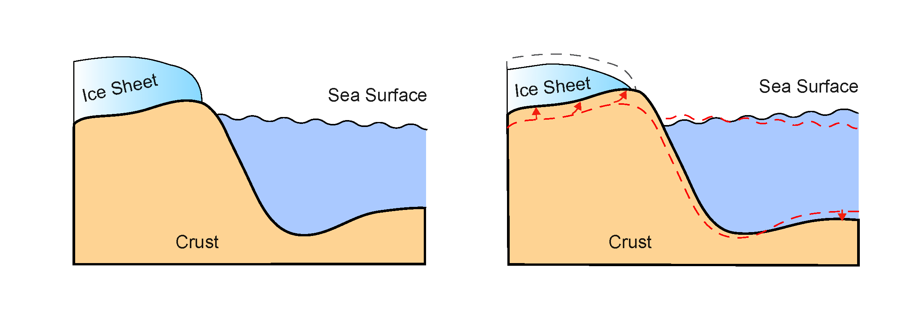
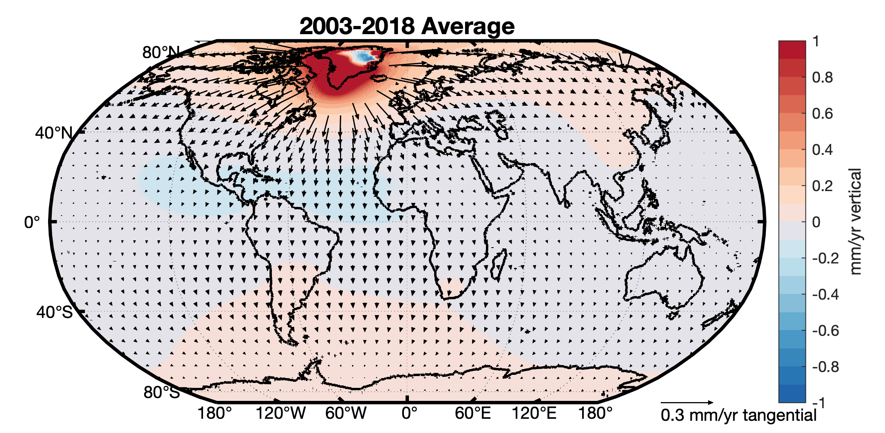
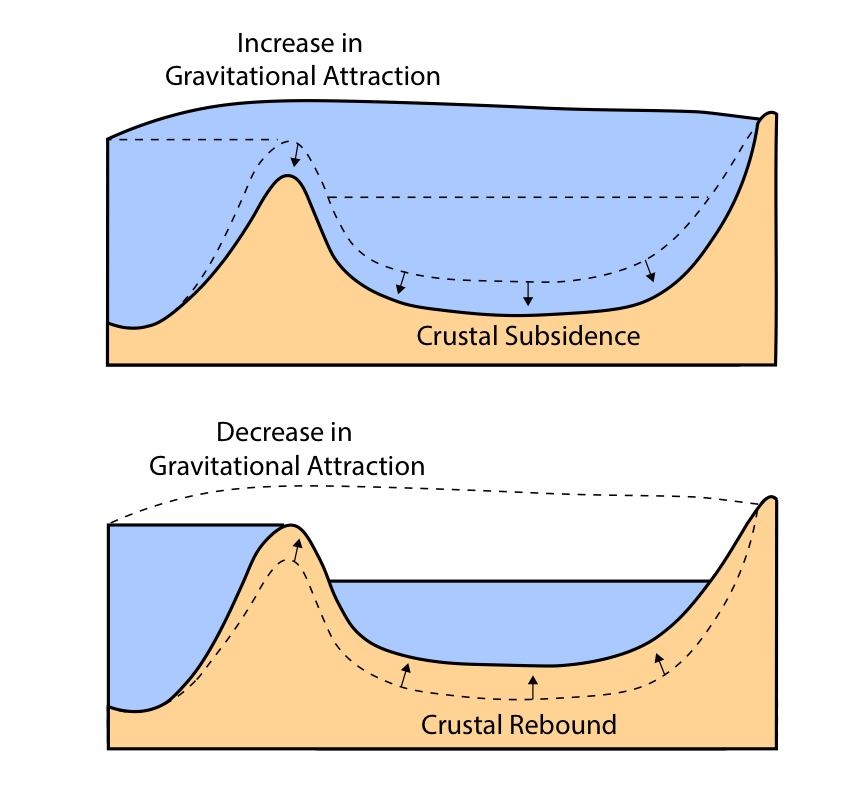
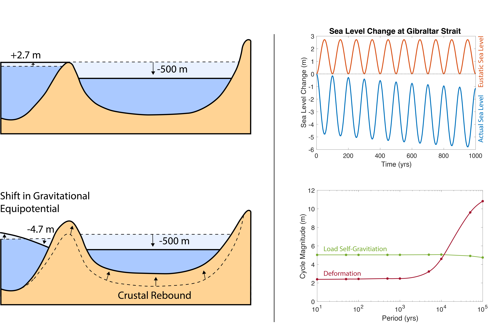
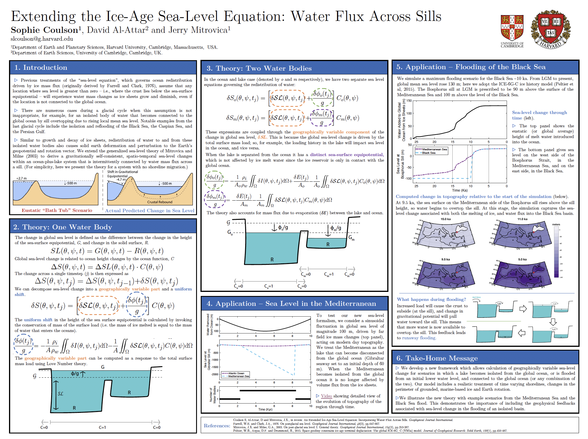
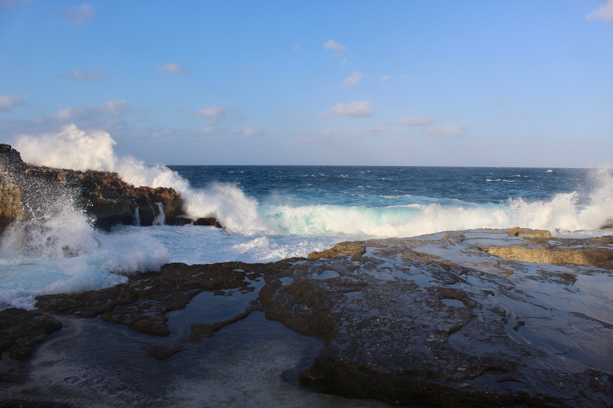

Research
I use theory and numerical modeling to evaluate the impacts of mantle flow on sea-level change and topography during periods in Earth history characterized by exceptional climatic conditions. A main motivation of this work is understanding exceptional events in Earth’s past, to provide insight into the potential variability of global climate and sea level through time.
3-D Crustal Motion Caused by Modern Ice-Mass Loss
 As ice sheets and glaciers melt and water is redistributed to the global oceans, the Earth's crust deforms, generating a complex pattern of 3-D motions at Earth's surface. Using satellite-derived constraints on early 21st century ice-mass balance of the Greenland and Antarctic Ice Sheets and a global database of mountain glaciers and ice caps, we predict how the crust has deformed over the last two decades.

We show that, rather than only being localized to regions of ice loss, melting of the Greenland Ice Sheet and Arctic glaciers has caused significant horizontal and vertical deformation of the crust that extends over much of the Northern Hemisphere. This 3-D surface motion is on average several tenths of a millimeter per year, and it varies significantly year-to-year. The results of this work suggest that future analysis of measurements of crustal motion (across various fields in Earth science) should correct for the deformation associated with modern ice-mass loss at sites distant from melting ice.
Read the full story here, or the Nature Research Highlight article here
Sea-Level Cycles and Flooding

Much like an ice sheet growing (or shrinking), flooding (or emptying) of large lakes and isolated ocean basins causes deformation of the Earth's crust, and a gravitational pertubation in the height of the sea surface nearby. These processes generate complex patterns of sea-level change through time, as water is redistributed from one area to another on the surface of the Earth. The illustration (right) demonstrates that sea-level rise, as the lake floods, causes crustal subsidence and an increase in sea surface height (defined by the gravitational equipotenial) close by in the open ocean. These two effects combined cause additional sea-level rise at the sill that connects the lake to the open ocean. Conversely sea level fall in the lake generates crustal rebound and a reduction in sea surface height at the sill.
To explore these processes and assess their importance on the dynamics of sea-level cycles in isolated ocean basins, I first took a look at sea level in the Mediterranean Sea during the Messinian Salinity Crisis.
A Proof of Concept: Sea Level Cycles During the Messinian Salinity Crisis
 The Messinian Salinity Crisis (5.96 to 5.33 Ma) was one of the most dramatic periods of sea-level change in recent geologic history – a break in the longstanding connection between the Atlantic Ocean and Mediterranean Sea. Large volumes of salt (halite and gypsum evaporites) on the Mediterranean seafloor provide evidence for a series of sea-level oscillations during this period. We model the processes described above during these sea-level cycles, and show that sea-level changes at the Gibraltar Strait depart dramatically from the average sea-level change in the global ocean. The relative contribution of deformational and gravitational effects to this departure also varies with the period of the cyclicity (bottom right figure).
As a further illustration, we consider a model of the cyclical flooding and emptying of the Mediterranean driven by a competition between tectonic uplift and erosion at the Gibraltar Strait (with uplift leading to closure of the strait and erosion leading to opening of the strait). The positive feedback on both refilling and drying of the Mediterranean Sea associated with the sea-level physics significantly reduce the tectonic uplift values required to generated the cyclic pattern of sea-level change. Read the full story here.
Extending the Ice-Age Sea-Level Equation: Water Flux Across Sills
Numerous megafloods occurred in previously isolated regions of low sea level during the last deglaciation (21,000 years ago to present), for example, the reflooding of the Black Sea, the Caspian Sea, and the Persian Gulf. Evidence for flooding in previous deglacials has also been identified in the English Channel, indicating outburst flooding across the Dover Strait from a large meltwater lake. In order to model sea level accurately during any of these periods, we now know we must take into account solid-Earth deformation and gravitational pertubations generated by flooding. Therefore, we extended the classical ice-age sea-level theory (Farrell and Clark, 1976, Mitrovica and Milne 2003) to develop the first generalized theory governing gravitationally self-consistent, spatio-temporal sea-level changes within an ocean-plus-lake system that is intermittently connected by water mass flux across a sill. 
The full theory is presented in our recent GJI Paper. An important result from this modelling is that floods tend to self-perpetuate; that is, a previously isolated basin will become fully flooded in a very short time. Once the flooding initiates, it creates a load which acts to depress the crust and gravitationally attract water from the open ocean, and both effects raise sea-level at the sill. Thus, more water becomes available to overtop the sill and a positive feedback loop is generated. Full PDF of my PALSEA EXPRESS 2020 Poster here.
Changing Topography and its Impact on Ice Sheet Stability
One important factor controlling ice sheet stability and local climate is bedrock topography. Over long timescales, viscous flow within the mantle can generate long wavelength perturbations in topography, termed dynamic topography. We investigate this process using state-of-the-art mantle convection models. Tracking perturbations in topography through time gives insight into ancient climate change. For a more detailed overview check out our groups recent review paper here.
The Role of Dynamic Topography on Glacial Inception in North America
Glacial inception in the northern hemisphere marks an abrupt transition in climate dynamics around 2.7 Ma when the Laurentide Ice Sheet began to grow from snow cover persisting year-round in high elevation regions of Baffin Island. Although it has been the focus of many studies, the exact driver of this glacial inception remains elusive. We examine the role of long timescale, solid earth processes in generating favorable conditions for ice growth, namely dynamic topography. To predict dynamic topography changes in the past, we run the mantle convection model ASPECT backwards in time from present day conditions to 5 Ma and track the evolution of normal stresses at the surface. Our predictions for dynamic topography show uplift across the Baffin Island region on the order of 75-150 m over 5 million years. Uplifting topography during the Plio-Pleistocene would reduce local surface temperatures and alter precipitation patterns, changing glacial mass balance. We are currently validating these uplift predictions by exploring geological constraints, and comparing different modelling approaches and inputs.
To learn more about the nitty gritty of this project and my work on ASPECT check out my recorded short talk from the 2020 APSECT Online User Meeting.
Animation made with ASPECT, courtesy of Wolfgang Bangerth.
The Sea-Level-Enabled E3SM Group

If you'd like to know more about our group at LANL and the Sea-Level-Enabled E3SM project, check out our website.
The Mitrovica Group

To learn more about the Mitrovica Group, current students and ongoing projects, check out our group website.